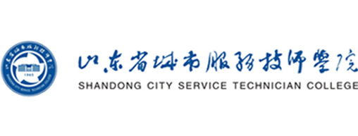

纪检审计督导处
纪检审计督导处
Business Administration School
2018年1月8日 星期一 | 设为首页 | 加为收藏


纪检审计督导处负责党内监督，督察国家政策法律法规、校纪校规和校党政决定决议的执行，廉政教育，查处违法违纪行为，受理违法违纪行为的检举控告和申诉，来信来访接待工作；负责学院审计工作和党政督导工作。
（1）负责监督检查党员，特别是党员领导干部，贯彻执行党的路线、方针、政策及遵守党的纪律、党内规章制度的落实情况。
（2）监督检查监察对象贯彻执行国家法律、法规、政策和学院决定、规章制度的落实情况。
（3）负责拟订党风廉政建设工作计划，并组织实施。
（4）组织开展党风廉政建设宣传教育工作。
（5）负责落实党风廉政建设责任制，履行党风廉政监督责任。
（6）负责校园廉政文化建设和腐败风险防控体系建设。
（7）承办领导干部执行党风廉政建设责任制落实情况的报告、个人重大事项报告、收入申报等上报工作。

-
纪检工作
关于贯彻落实省商业集团纪委<<关于进一步加强和规范...

-
审计工作
关于贯彻落实省商业集团纪委<<关于进一步加强和规范...
-
督导工作
关于贯彻落实省商业集团纪委<<关于进一步加强和规范...